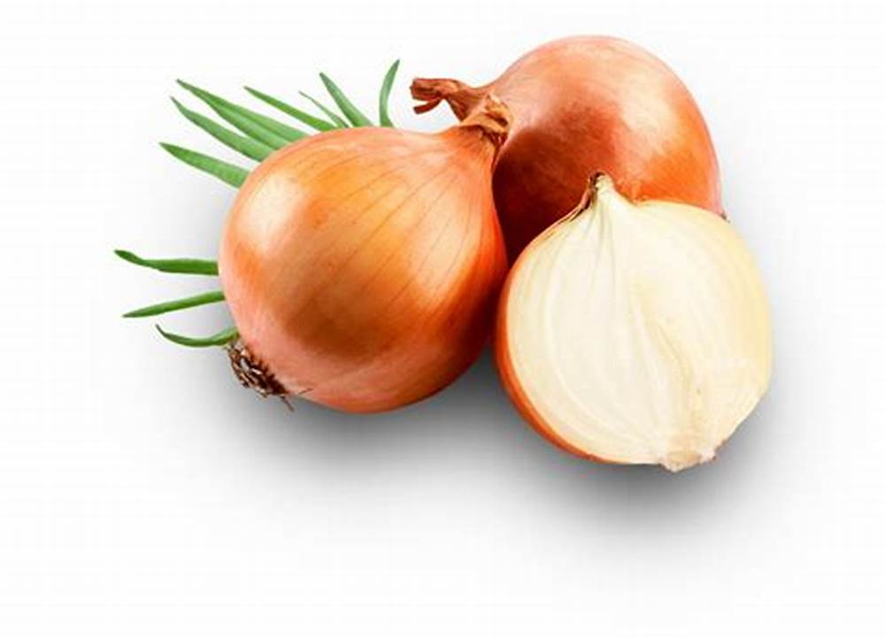

verduras
 |
PAPA NEGRA $1.000El origen de la planta de la papa y de su tubérculo comestible se establece, según la evidencia científica actual, el año 8000 a.C. en el altiplano andino, aproximadamente en el sur del actual Perú. Durante siglos fue, junto al maíz, puntal clave en la alimentación de varias civilizaciones precolombinas. |
 |
ZANAHORIA $1.500La zanahoria es una raíz comestible y su color naranja se debe a su alto contenido en carotenos, que actúan como importantes antioxidantes. Concretamente la zanahoria es rica en beta-caroteno y éste, al ser metabolizado por el hígado se transforma en vitamina A, una vitamina con alto poder antioxidante y especialmente importante para mantener en óptimo estado nuestra visión. |
 |
CEBOLLA CABEZONA $1.300Muchos arqueólogos, botánicos e historiadores de la alimentación creen que las cebollas se originaron en Asia central. Otras investigaciones sugieren que las cebollas se cultivaron por primera vez en Irán y en el oeste de Pakistán.
Se presume que nuestros predecesores descubrieron y empezaron a comer cebollas silvestres muy pronto, mucho antes de que se inventara la agricultura o incluso la escritura. Muy probablemente, esta humilde hortaliza era un alimento básico en la dieta prehistórica.
La mayoría de los investigadores coinciden en que la cebolla se cultiva desde hace 5000 años o más. Dado que las cebollas crecían de forma silvestre en varias regiones, probablemente se consumieron durante miles de años y se domesticaron simultáneamente en todo el mundo. Las cebollas pueden ser uno de los primeros cultivos porque eran menos perecederas que otros alimentos de la época, eran transportables, fáciles de cultivar y podían crecer en una variedad de suelos y climas. Además, la cebolla era útil para mantener la vida humana. Las cebollas evitaban la sed y podían secarse y conservarse para su consumo posterior cuando la comida escaseaba. Aunque el lugar y la época del origen de la cebolla siguen siendo un misterio, muchos documentos de épocas muy tempranas describen su importancia como alimento y su uso en el arte, la medicina y la momificación. |
 |
TOMATE $1.700El tomate es originario de los bajos Andes, y fue cultivado por los aztecas en México. La palabra azteca "tomatl" significaba simplemente "fruta hinchada" y los conquistadores españoles lo llamaron "tomate". |
 |
CEBOLLA LARGA $1.600Hoy en día, la cebolla larga es la principal fuente de empleo de estos tres municipios. El 60% de su producción llega a la Central de abastos de Bogotá, también conocido como Corabastos y posteriormente se distribuye a todo el país. |
 |
CILANTRO $500El cilantro puede referirse tanto a una hierba como a una especia. Aunque el término cilantro se usa en gran parte del mundo en referencia a ambos hojas de cilantro y semillas, en las Américas, generalmente se refiere a las semillas de cilantro secas que se utilizan como especia tanto en forma entera como molidas. Las hojas de cilantro y las semillas de cilantro tienen un sabor muy diferente y no se pueden sustituir entre sí en las recetas.
Las semillas de cilantro son redondas y de color marrón bronceado. Tienen un sabor cítrico un poco picante y están disponibles en el pasillo de especias de la mayoría de los mercados. Deberá prestar especial atención a las instrucciones de la receta, así como a cómo se prepara el ingrediente.enumerados para determinar si el autor tiene la intención de que las semillas o las hojas sean usado en la receta . |